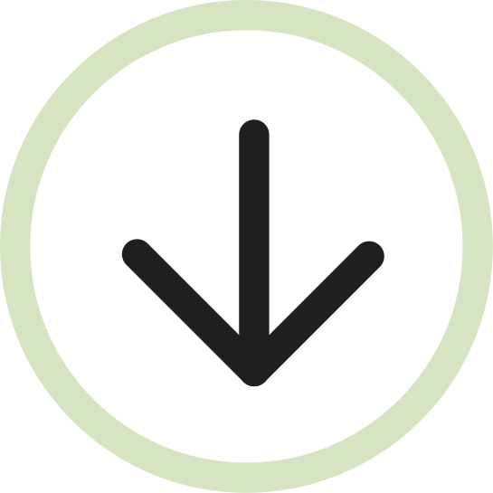

<<<<<<< HEAD
5. september 2026 • 13:00
=======
5. september 2026
>>>>>>> 2e9c70a719162540979a42c377556edc345b265b
Patrícia
&
Filip
<<<<<<< HEAD
Dotazník
Ideálne vyplniť do 16.8., prosím.


=======
Dotazník
Ideálne vyplniť do 16.8., prosím.
>>>>>>> 2e9c70a719162540979a42c377556edc345b265b
Rezort Partizán
• Obyce, Zlaté Moravce
Tu raz niečo bude, sľubujeme. Medzičasom – vyplňte
dotazník
, prosím.